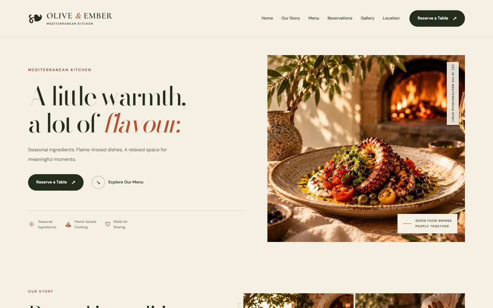
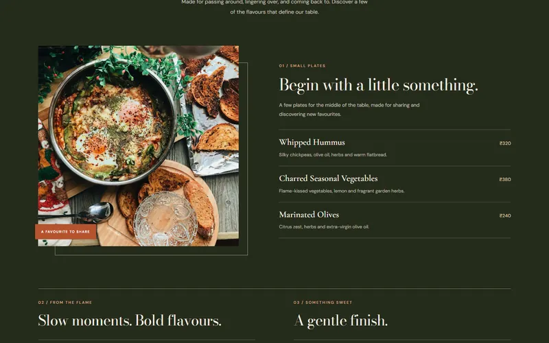
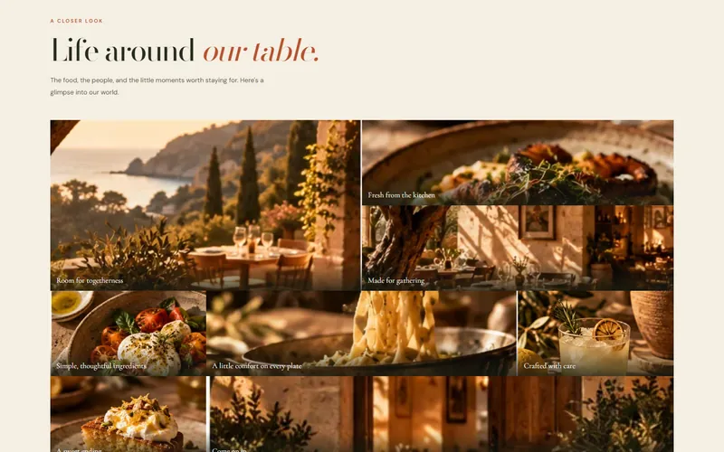
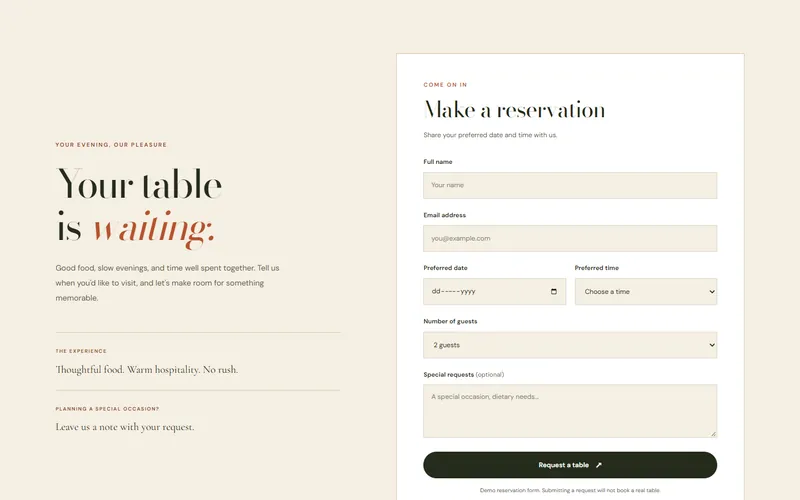
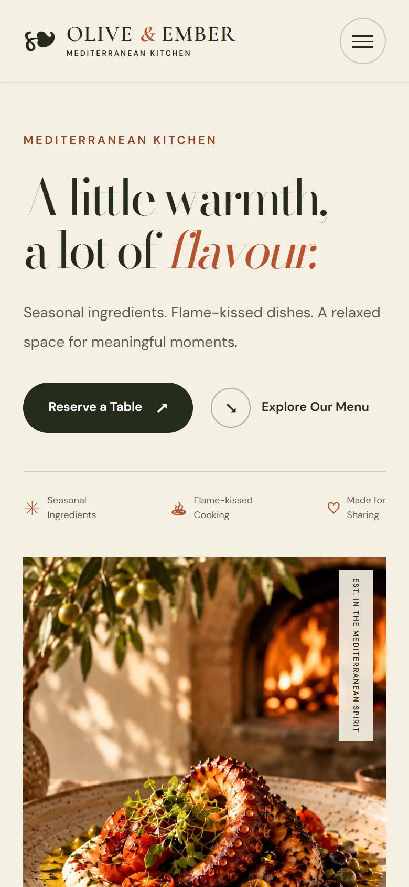

Olive & Ember
A concept website for a premium neighbourhood Mediterranean restaurant. The restaurant is fictional, and the site says so.
The business and its problem
A warm, refined neighbourhood restaurant.
It needed to feel premium but welcoming online, and turn that feeling into reservation requests.
My idea
An editorial, magazine-like site in warm ivory, deep olive and terracotta, where every section leads back to one thing: reserving a table.

What I built
One page, in plain HTML, CSS and JavaScript.
A header with the wordmark and a Reserve a Table button, the hero, the restaurant's story, a menu in three courses, a reservation request form, a gallery of eight photographs, the address and opening hours, and the footer. It works from small phones up, with a menu button that folds the navigation away on narrow screens.
Key decisions
- One clear next step"Reserve a Table" sits in the header and again in the hero, and the gallery closes with "Join us at the table", so the way to book is never far away.
- Type and colour that feel like a good menuBodoni Moda headlines with a terracotta italic word, Cormorant Garamond for the wordmark and dish names, DM Sans for reading; warm ivory, deep olive, terracotta and sandstone.
- A menu that reads like oneSmall plates, from the flame, something sweet: each dish with its name, one line on what's in it, and its price.
- An honest booking formIt checks the details in the browser (no past dates, no time that has already gone today) and says plainly that it is a demo: no real table is booked. The address and opening hours are marked as samples too.
- Calm, accessible detailsSections fade up gently as they arrive, and not at all for visitors who ask for less motion; visible focus outlines, labelled form fields, and Escape closes the phone menu.
Stills



On a phone
